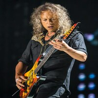

.jpg)
James hetfield. GUITARRA
James Alan Hetfield (Downey, California, 3 de agosto de 1963)es un músico estadounidense conocido por ser el vocalista, guitarrista rítmico y principal compositor de la banda de thrash metal Metallica, además de ser cofundador de la misma junto con Lars Ulrich. A los nueve años, James comenzó a tomar clases de piano. Más tarde, tocaría la batería de su hermano David, para finalmente dedicarse a la guitarra en su adolescencia, más específicamente con 14 años. En dichos años, James formó su primera banda llamada Obsession, inspirada en grupos como:The Beatles, Black Sabbath, UFO, Kiss, Aerosmith, Motörhead, Queen y Thin Lizzy. Obsession estaba compuesta por los hermanos Veloz.
Lars Ulrich. BATERIA
Lars Ulrich (Gentofte, 26 de diciembre de 1963) es un músico danés conocido principalmente por ser el baterista, compositor, fundador y líder (junto a James Hetfield) de la banda de thrash metal estadounidense Metallica. Nació el 26 de diciembre de 1963 en Gentofte (Dinamarca), en el seno de una familia de clase media-alta. Siendo un prodigio del tenis en su juventud, Ulrich se trasladó a Los Ángeles, California, a la edad de dieciséis años para seguir con su educación, pero en vez de seguir jugando al tenis, decidió dedicarse a la batería. Después de publicar un anuncio en un periódico local de Los Ángeles, The Recycler, conoció a James Hetfield.
Kirk Hammett. GUITARRA
Kirk Lee Hammett (San Francisco, California, 18 de noviembre de 1962) es un guitarrista estadounidense, actualmente miembro de la banda de thrash metal Metallica. Está considerado como el noveno mejor guitarrista del momento según la revista Total Guitar y número 11 según una lista de la revista Rolling Stone seleccionada en 2003 por David Fricke, colaborador de la misma.1 Kirk es uno de los discípulos más conocidos del legendario guitarrista y maestro Joe Satriani. En 2011 la revista Rolling Stone elaboró una nueva lista basándose en las votaciones de reconocidos guitarristas, entre los que se encontraba el propio Kirk Hammett.2
Robert Trujillo. BAJO

Robert Trujillo (Santa Mónica, California; 23 de octubre de 1964) es un músico estadounidense de ascendencia mexicana, bajista actual de la banda Metallica. Antes de ingresar en la mencionada banda, el 24 de febrero de 2003, Robert había tocado con artistas como Suicidal Tendencies, Black Label Society, Infectious Grooves, Ozzy Osbourne o Jerry Cantrell, entre otros. Entró a formar parte de Metallica, reemplazando al anterior bajista Jason Newsted.